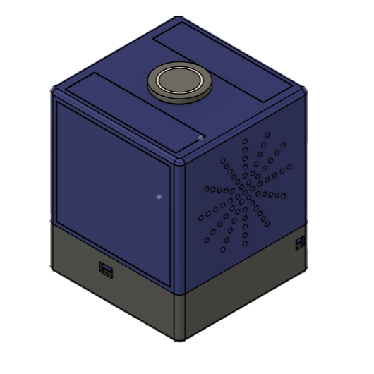
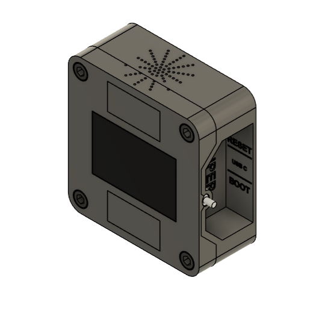
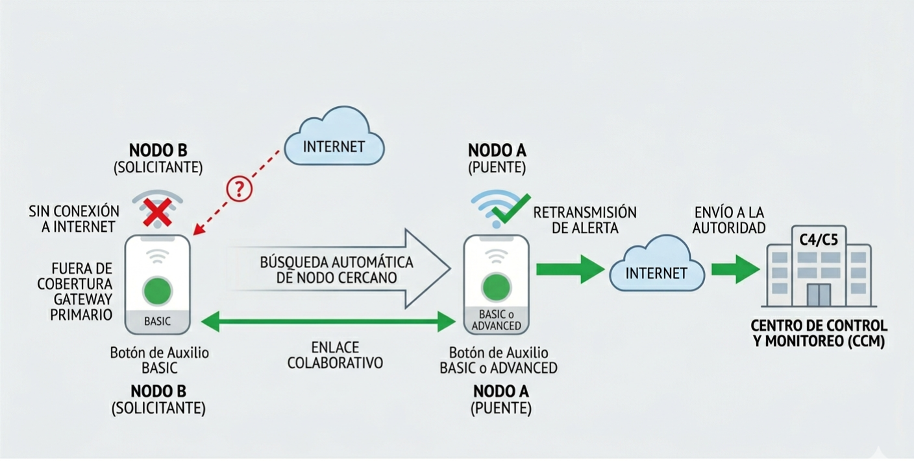
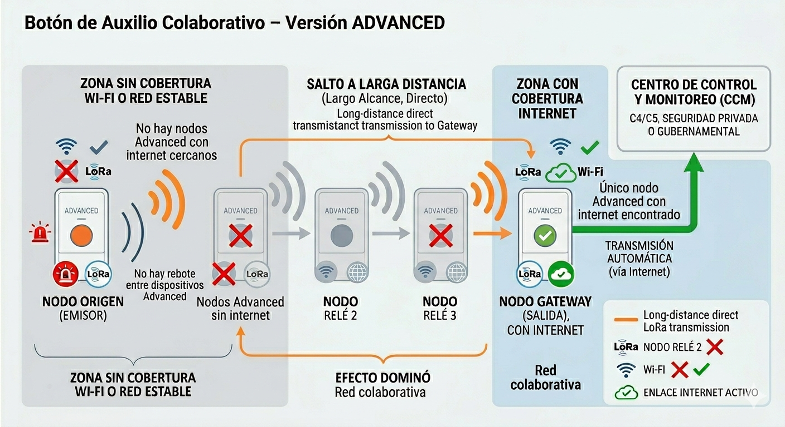
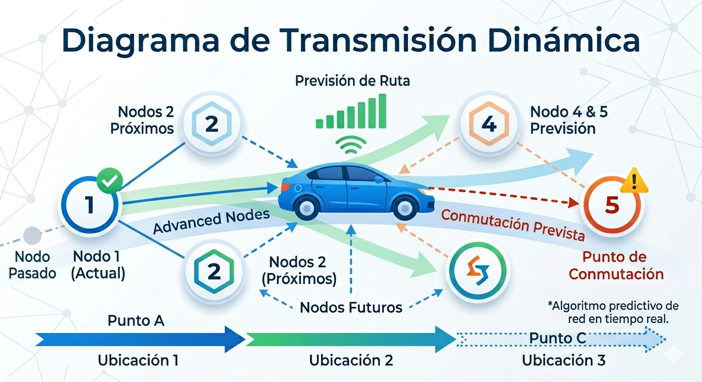
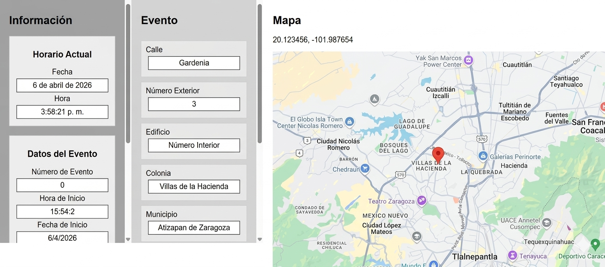
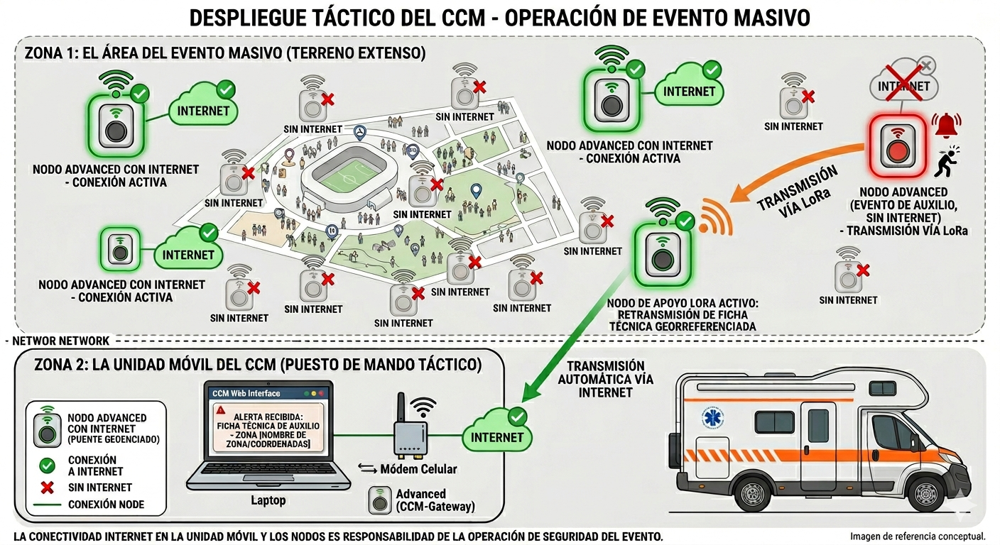

Sistema físico de solicitud de auxilio con referencia de ubicación configurada
Tu seguridad, en un solo toque
Infraestructura tecnológica diseñada para enviar solicitudes de auxilio en segundos
e integrarse a protocolos institucionales de seguridad en campus, empresas
y espacios públicos.
Selecciona el sector al que pertenece tu organización para ver la solución
adaptada a tu entorno operativo.
El problema operativo actual
En una emergencia real, los segundos importan.
Los sistemas tradicionales de auxilio —apps móviles, llamadas telefónicas
o sirenas analógicas— introducen retrasos operativos por distintas razones:
interacción manual bajo estrés, dependencia de dispositivos personales,
comunicación ambigua de la ubicación o activaciones que no transmiten
información de referencia del punto de origen.

Dispositivo de activación de un solo pulso. Imagen de referencia conceptual.
¿Por qué las universidades necesitan un sistema distinto?
Emergencias en sanitarios, aulas, pasillos y estacionamientos
Agresiones contra estudiantes y personal académico
Limitaciones operativas de sirenas y botones analógicos
Reducción de los intervalos de notificación y entrega de datos de ubicación hacia el Centro de Control
Notificación georreferenciada para facilitar el despliegue oportuno del personal de seguridad interna
Comparativa de soluciones
Característica
Apps móviles
Sirenas tradicionales
Botón Colaborativo
Activación física de un solo toque de la alerta
No (requiere usar el teléfono)
Sí
Sí
Punto físico dedicado para solicitar auxilio
No
Sí
Sí
Ubicación del evento
Limitada (GPS del teléfono)
No disponible
Sí (referencia de ubicación configurada
*
La precisión de la ubicación depende de la correcta configuración inicial
del dispositivo (dirección, coordenadas GPS o punto de instalación).
)
Identificación del origen configurado de la alerta
Limitada (depende del usuario)
No (solo señal sonora)
Sí (según configuración del dispositivo
*
La precisión de la ubicación depende de la correcta configuración inicial
del dispositivo (dirección, coordenadas GPS o punto de instalación).
)
Notificación de auxilio al Centro de Control y Monitoreo (
CCM )
Sí (requiere conexión del teléfono)
No
Sí (directa o a través de un nodo del sistema)
**
El envío de la solicitud de auxilio requiere conectividad a Internet hacia el
sistema de monitoreo. Esta conectividad puede estar disponible directamente en
el dispositivo o a través de otro dispositivo cercano del sistema (versión
Basic o Advanced) que disponga de acceso a Internet y funcione como nodo de
enlace para transmitir la alerta.
La disponibilidad de la transmisión depende de la conectividad a Internet
existente dentro del entorno de instalación.
El tiempo es el factor crítico

Dispositivo CCM institucional de recepción y gestión de solicitudes de auxilio con micro-ubicación.
Imagen de referencia conceptual.
En una emergencia real, cada segundo que se pierde en procesos innecesarios
—como desbloquear un dispositivo, describir una ubicación bajo estrés
o recorrer instalaciones para localizar el origen de una alerta—
retrasa la llegada del primer respondiente.
Los tiempos mostrados a continuación representan el intervalo
desde el momento en que una persona intenta solicitar ayuda
hasta que el personal de despacho visualiza los datos de ubicación de referencia
*
La precisión de la ubicación depende de la correcta configuración inicial
del dispositivo (dirección, coordenadas GPS o punto de instalación).
del evento para iniciar la atención.
Apps móviles
60–120 s
Desbloqueo del teléfono, apertura de la app,
carga, permisos y envío manual de ubicación.
Sirenas tradicionales
3–10 min
Activación sonora sin información de ubicación.
El personal de seguridad debe seguir la posible procedencia del sonido
y revisar manualmente los puntos de activación para localizar el evento.
Botón de Auxilio Colaborativo
< 10 s
Activación física por pulsación.
Datos de ubicación configurados enviados al Centro de Control y Monitoreo (
CCM )
*
La precisión de la ubicación depende de la correcta configuración inicial
del dispositivo (dirección, coordenadas GPS o punto de instalación).
.
Tecnología diseñada para entornos críticos
Arquitectura Mesh con nodos puente
Micro-ubicación configurable por espacio protegido
Integración con protocolos institucionales
Registro ante INDAUTOR
En campus universitarios ubicados en zonas de riesgo sísmico,
esta infraestructura puede ampliarse con
Alertamiento Sísmico
como una capacidad complementaria de protección civil,
disponible en las ediciones
Basic
y
Advanced.
Contacto institucional
Solicita información técnica, una demostración funcional o un piloto controlado
para tu institución.
Ofrecemos demostraciones conceptuales y pilotos controlados
para instituciones que deseen evaluar el sistema
antes de una implementación a mayor escala.
El Botón de Auxilio Colaborativo es una infraestructura tecnológica
diseñada para adaptarse a distintos entornos donde la precisión de
ubicación y la agilidad en la transmisión del evento son críticas.
Sector Educativo
Diseñado para campus universitarios, preparatorias y colegios con
protocolos internos de seguridad.
Permite identificar con precisión el punto de auxilio en sanitarios,
aulas, pasillos, estacionamientos y áreas comunes.
Aplicable en parques industriales, plantas, corporativos y centros logísticos.
La arquitectura mesh permite cubrir grandes distancias y zonas sin Wi-Fi,
facilitando la localización inmediata de incidentes operativos o de seguridad.
Sector Residencial con Seguridad Privada
Diseñado para conjuntos habitacionales, fraccionamientos y comunidades
residenciales con casetas de vigilancia y personal de seguridad.
Permite identificar con precisión el punto de auxilio dentro del
perímetro residencial y activar los protocolos internos de atención.
Sector Comercial / Centros Comerciales
Diseñado para centros comerciales con seguridad privada donde locatarios
y visitantes pueden enfrentar situaciones que requieren apoyo inmediato.
El sistema permite solicitar ayuda desde locales comerciales, pasillos,
sanitarios o estacionamientos, enviando una alerta con la ubicación
configurada
*
La precisión de la ubicación depende de la correcta configuración inicial
del dispositivo (local, pasillo, zona o punto de instalación).
hacia el Centro de Control y Monitoreo (
CCM ) del centro comercial.
Sector Ciudadano y Gobierno
Diseñado para la convivencia operativa en centros de monitoreo C4 y C5,
espacios públicos, edificios gubernamentales y comunidades.
El sistema permite la recepción de solicitudes de auxilio con ubicación
*
La precisión de la ubicación depende de la correcta configuración inicial
del dispositivo (dirección, coordenadas GPS o punto de instalación).
mediante una terminal de visualización web dedicada que facilita la gestión del evento.
Condiciones técnicas del sistema
* La micro-ubicación mostrada en el sistema depende de la correcta
configuración inicial del dispositivo, incluyendo la dirección,
coordenadas GPS o punto de instalación definidos durante el proceso
de configuración. Una configuración incorrecta puede afectar la
precisión de la ubicación mostrada en el sistema de monitoreo.
** La transmisión de la solicitud de auxilio requiere conectividad a Internet.
La conexión puede establecerse mediante una red Wi-Fi con acceso a Internet
o a través de un dispositivo cercano del sistema (versión Basic o Advanced)
que disponga de dicha conectividad y funcione como nodo de enlace.
La disponibilidad de la transmisión depende de la conectividad a Internet
existente en el lugar de instalación.
El problema operativo en seguridad pública
En entornos urbanos, espacios públicos y zonas de alta afluencia, los segundos
son determinantes. Los mecanismos tradicionales de solicitud de auxilio, como
llamadas telefónicas, reportes verbales o alarmas sonoras, generan retrasos
operativos por la falta de referencias técnicas sobre el punto de origen del
evento y por la dependencia de comunicación humana bajo estrés.
Información incompleta o imprecisa del punto de auxilio
Saturación de líneas telefónicas y entrevistas iniciales
Alertas sin datos claros de localización
Dificultad para gestionar el despacho con datos de ubicación específicos desde el primer momento
Un solo botón en una emergencia
En situaciones de pánico o alta presión, la capacidad de tomar decisiones
complejas se reduce drásticamente. El Botón de Auxilio Colaborativo se basa en el
principio de acción única: una sola interacción física dedicada para iniciar
inmediatamente el proceso de solicitud de auxilio.
Esto elimina la ambigüedad en la activación, reduce la carga cognitiva del
ciudadano y transfiere el análisis, clasificación y despacho del evento al Centro
de Control y Monitoreo (
CCM ), con datos de georreferenciación configurados
*
La precisión de la ubicación depende de la correcta configuración inicial
del dispositivo (dirección, coordenadas GPS o punto de instalación).
desde el primer segundo.
La solución institucional
El Botón de Auxilio Colaborativo es un dispositivo físico dedicado que permite
activar una solicitud de auxilio con un solo toque, iniciando el envío automático de la
alerta junto con los datos de ubicación registrados del punto de activación
*
La precisión de la ubicación depende de la correcta configuración inicial
del dispositivo (dirección, coordenadas GPS o punto de instalación).
hacia el Centro de Control y Monitoreo (
CCM ) o sistema institucional de seguridad pública.
Activación física de un solo paso, operando sin necesidad de teléfonos móviles
Envío automático de la solicitud de auxilio
Identificación configurada del punto de activación (micro-ubicación)
*
La precisión de la ubicación depende de la correcta configuración inicial
del dispositivo (dirección, coordenadas GPS o punto de instalación).
Recepción y visualización centralizada en el Centro de Control y Monitoreo (
CCM )
Dispositivo de activación de un solo pulso. Imagen de referencia conceptual.
Comparativa operativa (resumen ejecutivo)
Capacidad del sistema
Apps móviles
Sirenas tradicionales
Botón Colaborativo
Activación de la alerta
Depende del uso del teléfono
Inmediata
Inmediata (Hardware de acción única con Ficha Operativa)
Información de ubicación del evento
Variable (GPS del dispositivo)
No disponible
Referencia de la ubicación configurada
*
La precisión de la ubicación depende de la correcta configuración inicial
del dispositivo (dirección, coordenadas GPS o punto de instalación).
Identificación del origen de la alerta
Parcial (usuario / GPS)
No identificable (solo señal sonora)
Sí (según registro del dispositivo
*
La precisión de la ubicación depende de la correcta configuración inicial
del dispositivo (dirección, coordenadas GPS o punto de instalación).
)
Dependencia de interacción del usuario
Alta
Baja
Mínima
Sistema de monitoreo de alertas
No incluido
No disponible
Incluido (panel web de monitoreo)
El tiempo como factor crítico
Los tiempos indicados representan el intervalo desde que una persona intenta
solicitar ayuda hasta que el personal de despacho visualiza los datos de ubicación de referencia
*
La precisión de la ubicación depende de la correcta configuración inicial
del dispositivo (dirección, coordenadas GPS o punto de instalación).
del evento para iniciar la atención.
Apps móviles
60–120 s
Desbloqueo de teléfono, apertura de la app, permisos y envío manual de
ubicación.
Sirenas tradicionales
3–10 min
Activación sonora sin información de ubicación. Requiere búsqueda manual del
origen del evento.
Botón de Auxilio Colaborativo
< 10 s
Activación física de un solo toque con envío automático de referencia de ubicación configurada
*
La precisión de la ubicación depende de la correcta configuración inicial
del dispositivo (dirección, coordenadas GPS o punto de instalación).
al Centro de Control y Monitoreo (
CCM ).
Dispositivo CCM institucional de recepción y gestión de solicitudes de auxilio con micro-ubicación.
Imagen de referencia conceptual.
Micro-ubicación configurable
Cada dispositivo se configura previamente con su ubicación específica
*
La precisión de la ubicación depende de la correcta configuración inicial
del dispositivo (dirección, coordenadas GPS o punto de instalación).
dentro del entorno a proteger, por ejemplo:
Dirección configurada del dispositivo (calle, número exterior e interior)
Colonia y municipio del punto de instalación
Coordenadas geográficas del evento (latitud y longitud)
Identificación del tipo de ubicación o aplicación del dispositivo (escuela, comercio, paradero, etc.)
La precisión no depende del GPS del usuario ni de descripciones verbales bajo
estrés. Esto permite a los centros C4/C5 gestionar el despacho con mayor certidumbre técnica
*
La precisión de la ubicación depende de la correcta configuración inicial
del dispositivo (dirección, coordenadas GPS o punto de instalación).
desde el primer momento.
Como parte de una estrategia integral de protección civil,
la plataforma del Botón de Auxilio Colaborativo puede incorporar
Alertamiento Sísmico
como un mecanismo complementario de difusión,
mediante las ediciones
Basic
y
Advanced,
sujeto a convenios con proveedores oficialmente autorizados.
Esta misma tecnología se adapta también a entornos
educativos,
industriales / residenciales,
centros comerciales
y a aplicaciones móviles para
vehículos
con protocolos de seguridad institucional.
Contacto institucional
Solicita información técnica, una demostración funcional o un piloto
controlado del sistema para tu institución.
El sistema dispone de una interfaz web de monitoreo que permite
visualizar los eventos activos generados por los dispositivos,
mostrando la georreferenciación configurada
*
La precisión de la ubicación depende de la correcta configuración
inicial del dispositivo durante su instalación.
y la información del punto de activación para su atención operativa.
El Botón de Auxilio Colaborativo puede evaluarse mediante demostraciones
conceptuales y pilotos institucionales que permitan validar su operación
antes de una implementación a escala en infraestructura pública.
* La micro-ubicación mostrada en el sistema depende de la correcta
configuración inicial del dispositivo, incluyendo la dirección,
coordenadas GPS o punto de instalación definidos durante el proceso
de configuración. Una configuración incorrecta puede afectar la
precisión de la ubicación mostrada en el sistema de monitoreo.
** La transmisión de la solicitud de auxilio requiere conectividad a Internet.
La conexión puede establecerse mediante una red Wi-Fi con acceso a Internet
o a través de un dispositivo cercano del sistema (versión Basic o Advanced)
que disponga de dicha conectividad y funcione como nodo de enlace.
La disponibilidad de la transmisión depende de la conectividad a Internet
existente en el lugar de instalación.
Sector Industrial / Residencial
Sistema físico de auxilio con referencia de ubicación configurada para seguridad privada,
industrial y residencial.
Infraestructura de auxilio diseñada para enviar solicitudes de ayuda en segundos,
proporcionando datos de referencia de ubicación
*
La precisión de la ubicación depende de la correcta configuración inicial
del dispositivo (dirección, coordenadas GPS o punto de instalación).
del evento e integrándose a protocolos de seguridad
privada, industrial y residencial con control de acceso.
El problema operativo actual
En entornos industriales, corporativos y residenciales con seguridad privada,
los segundos importan. Los mecanismos tradicionales —radio, teléfonos móviles,
sirenas o rondines manuales— generan retrasos operativos por la falta de datos
técnicos sobre el punto de origen del evento y por la dependencia de comunicación verbal
bajo estrés.
Información incompleta o imprecisa sobre el punto exacto del evento
Dependencia de comunicación por radio o teléfono
Activaciones de alerta sin datos operativos claros de localización
Patrullajes reactivos de búsqueda dentro de áreas extensas
Por qué un solo botón es crítico en una emergencia
En situaciones de pánico o alta presión, la capacidad de analizar múltiples opciones
se reduce de forma significativa. Cada segundo adicional dedicado a decidir qué hacer
incrementa el riesgo de error o retraso.
El Botón de Auxilio Colaborativo está diseñado bajo el principio de
acción única: una sola interacción física para activar el sistema,
eliminando ambigüedad y reduciendo la carga cognitiva del usuario.
Esto permite que la activación se realice en un solo paso y que el análisis y atención del evento
se realicen desde el Centro de Control y Monitoreo (
CCM ) con la ficha de ubicación configurada
*
La precisión de la ubicación depende de la correcta configuración inicial
del dispositivo (dirección, coordenadas GPS o punto de instalación).
desde el primer momento.
La solución
El Botón de Auxilio Colaborativo es un dispositivo físico dedicado que permite activar
una solicitud de auxilio mediante una acción simple, transmitiendo de forma automatizada la solicitud de auxilio
y el registro de ubicación de origen
*
La precisión de la ubicación depende de la correcta configuración inicial
del dispositivo (dirección, coordenadas GPS o punto de instalación).
hacia un Centro de Control y Monitoreo (
CCM ) de seguridad privada o industrial.
Activación física por pulsación, sin dependencia de teléfonos móviles
Envío automático de la solicitud de auxilio
Identificación configurada del punto de activación (micro-ubicación)
*
La precisión de la ubicación depende de la correcta configuración inicial
del dispositivo (dirección, coordenadas GPS o punto de instalación).
Recepción y visualización centralizada a nivel operativo
Dispositivo de activación de un solo pulso para entornos industriales,
corporativos y residenciales. Imagen de referencia conceptual.
Comparativa operativa (resumen ejecutivo)
Característica
Apps móviles
Sirenas tradicionales
Botón Colaborativo
Activación física de un solo toque
No
Sí
Sí
Ubicación del evento
General / variable
No disponible
Si (Referencia de ubicación configurada
*
La precisión de la ubicación depende de la correcta configuración inicial
del dispositivo (dirección, coordenadas GPS o punto de instalación).
)
Identificación del origen de la alerta
Parcial
Ambigua
Sí (Identificación por punto de registro
*
La precisión de la ubicación depende de la correcta configuración inicial
del dispositivo (dirección, coordenadas GPS o punto de instalación).
)
Dependencia del usuario
Alta
Baja
Mínima
Gestión de alerta en Centro de Control y Monitoreo (CCM)
Sí (requiere conexión del teléfono)
No
Sí (directa o a través de un nodo del sistema)
**
El envío de la solicitud de auxilio requiere conectividad a Internet hacia el
sistema de monitoreo. Esta conectividad puede estar disponible directamente en
el dispositivo o a través de otro dispositivo cercano del sistema (versión
Basic o Advanced) que disponga de acceso a Internet y funcione como nodo de
enlace para transmitir la alerta.
La disponibilidad de la transmisión depende de la conectividad a Internet
existente dentro del entorno de instalación.
El tiempo como factor crítico
Apps móviles
60–120 s
Dependencia del dispositivo personal, apertura de aplicación y envío manual
de información.
Sirenas tradicionales
3–10 min
Activación sonora sin ubicación. Se requiere recorrido físico para localizar
el origen.
Botón de Auxilio Colaborativo
< 10 s
Activación física de un solo toque con envío automático de referencia de ubicación configurada
*
La precisión de la ubicación depende de la correcta configuración inicial
del dispositivo (dirección, coordenadas GPS o punto de instalación).
.
Centro de Control y Monitoreo (CCM) institucional de recepción y gestión de solicitudes de auxilio con
micro-ubicación para seguridad privada e industrial. Imagen de referencia conceptual.
Micro-ubicación configurable
Cada dispositivo se configura previamente con su ubicación específica
*
La precisión de la ubicación depende de la correcta configuración inicial
del dispositivo (dirección, coordenadas GPS o punto de instalación).
dentro del entorno a proteger:
Área o espacio
Pasillo o sección
Nivel o zona
Punto crítico definido por la institución
La referencia de sitio es independiente de señales GPS móviles o descripciones verbales bajo estrés, permitiendo
una intervención operativa oportuna y georreferenciada.
En entornos industriales y residenciales con personal permanente,
la infraestructura puede ampliarse con
Alertamiento Sísmico
como apoyo a protocolos de evacuación,
continuidad operativa y protección del personal,
disponible en las ediciones
Basic
y
Advanced.
Esta misma infraestructura tecnológica puede implementarse también en
entornos
educativos,
centros comerciales,
en integración con
seguridad pública (C4 / C5)
y en aplicaciones móviles para
vehículos.
Contacto institucional
Solicita información técnica, una demostración funcional o un piloto controlado
para tu institución.
El Botón de Auxilio Colaborativo puede evaluarse mediante demostraciones conceptuales
y pilotos institucionales antes de su implementación a escala.
* La micro-ubicación mostrada en el sistema depende de la correcta
configuración inicial del dispositivo, incluyendo la dirección,
coordenadas GPS o punto de instalación definidos durante el proceso
de configuración. Una configuración incorrecta puede afectar la
precisión de la ubicación mostrada en el sistema de monitoreo.
** La transmisión de la solicitud de auxilio requiere conectividad a Internet.
La conexión puede establecerse mediante una red Wi-Fi con acceso a Internet
o a través de un dispositivo cercano del sistema (versión Basic o Advanced)
que disponga de dicha conectividad y funcione como nodo de enlace.
La disponibilidad de la transmisión depende de la conectividad a Internet
existente en el lugar de instalación.
Centros Comerciales
Sistema físico de auxilio con referencia de ubicación técnica por punto de venta o área común para
centros comerciales con seguridad privada.
Infraestructura tecnológica diseñada para permitir que locatarios,
personal y visitantes puedan solicitar ayuda con una pulsación única dentro
del centro comercial, enviando un evento de alerta con ubicación
configurada
*
La precisión de la ubicación depende de la correcta configuración inicial
del dispositivo (número de local, pasillo, zona o coordenadas del punto
de instalación).
hacia el Centro de Control y Monitoreo (
CCM ) del centro comercial.
El problema operativo en centros comerciales
En muchos centros comerciales, los locatarios y visitantes enfrentan barreras críticas
para solicitar asistencia de forma ágil dentro de las instalaciones.
Ante un incidente, el personal suele quedar incomunicado, perdiendo tiempo vital
al tener que abandonar su posición para buscar a un elemento de seguridad o
dirigirse físicamente hacia una caseta de vigilancia.
Este proceso puede ser complicado o imposible durante situaciones como
asaltos, intentos de robo o confrontaciones con clientes agresivos,
especialmente cuando el personal se encuentra dentro de un local cerrado.
Locatarios que no pueden abandonar su local durante un evento de riesgo
Usuarios que enfrentan incidentes en pasillos, sanitarios o áreas poco
vigiladas
Zonas extensas donde la seguridad no puede estar presente de forma
permanente
Dificultad para describir la ubicación exacta del evento bajo estrés
Unidades de negocio con perfiles de alto riesgo a incidentes
Algunos establecimientos dentro de los centros comerciales concentran
productos o servicios de alto valor económico, lo que incrementa el
riesgo operativo frente a robos o intentos de asalto.
Bancos y sucursales financieras
Casas de cambio
Joyerías
Tiendas de telefonía móvil de alta gama
Comercios de electrónica o artículos de alto valor
Restaurantes de alta gama donde los clientes pueden portar relojes,
joyería u otros artículos de valor que pueden atraer incidentes
oportunistas
Tiendas de lujo o boutiques de marcas premium
En estos casos, disponer de un alertamiento silencioso y de activación táctil
permite solicitar apoyo sin abandonar el punto de operación ni generar
situaciones de mayor riesgo.
Por qué un solo botón es crítico en una emergencia
Durante situaciones de estrés o pánico, la capacidad de evaluar múltiples
opciones disminuye considerablemente. Tener que abrir una aplicación,
marcar un número telefónico o explicar una situación puede generar
retrasos críticos.
El Botón de Auxilio Colaborativo se basa en el principio de
acción única: una sola interacción física para activar
la solicitud de ayuda.
El usuario únicamente solicita auxilio. La evaluación del tipo de evento
corresponde al personal de seguridad del centro comercial una vez que
llega al punto exacto del incidente.
La solución
El Botón de Auxilio Colaborativo es un dispositivo físico dedicado que
permite a locatarios y visitantes solicitar ayuda de forma inmediata
dentro del centro comercial.
Activación física por pulsación sin necesidad de teléfonos móviles
Envío automático de la solicitud de auxilio al Centro de Control y Monitoreo (
CCM )
Identificación del origen de la alerta mediante ubicación configurada
*
La precisión de la ubicación depende de la correcta configuración inicial
del dispositivo (número de local, pasillo, zona o coordenadas del punto
de instalación).
Visualización de la alerta en el Centro de Control y Monitoreo (
CCM ) del centro comercial
Dispositivo de activación de un solo pulso instalado en mostradores,
columnas de pasillos o puntos estratégicos dentro del centro comercial.
Imagen de referencia conceptual.
Comparativa operativa en centros comerciales
Característica
Reporte telefónico
Guardias de pasillo
Botón Colaborativo
Activación por pulsación
No
Limitada
Sí
Ubicación del evento
General / ambigua
Visual
Referencia de ubicación configurada
*
La precisión de la ubicación depende de la correcta configuración inicial
del dispositivo (número de local, pasillo, zona o coordenadas del punto
de instalación).
Identificación del origen
Dependiente del usuario
Visual aproximada
Sí (según configuración del dispositivo)
*
La precisión de la ubicación depende de la correcta configuración inicial
del dispositivo (número de local, pasillo, zona o coordenadas del punto
de instalación).
Dependencia del usuario
Alta
Media
Mínima
Notificación al centro de monitoreo
No siempre
No
Sí
**
La transmisión de la solicitud de auxilio requiere conectividad
a Internet hacia el sistema de monitoreo. Esta conexión puede
establecerse directamente desde el dispositivo o a través de
otro dispositivo cercano del sistema que disponga de acceso
a Internet y funcione como nodo de enlace.
El tiempo como factor crítico
Apps móviles
60–120 s
Requiere desbloquear el teléfono, abrir la aplicación y
enviar la información manualmente.
Vigilancia física reactiva
3–10 min
El personal de seguridad debe localizar visualmente el
origen del incidente dentro de pasillos o estacionamientos.
Botón de Auxilio Colaborativo
< 10 s
Activación física de un solo toque con envío automático de referencia de ubicación configurada
*
La precisión de la ubicación depende de la correcta configuración inicial
del dispositivo (número de local, pasillo, zona o coordenadas del punto
de instalación).
Interfaz de recepción de eventos en el Centro de Control y Monitoreo (
CCM ) del
centro comercial mostrando el punto de activación de la alerta.
Imagen de referencia conceptual.
Micro-ubicación configurable
Cada dispositivo puede configurarse previamente con la
ubicación específica
*
La precisión de la ubicación depende de la correcta configuración inicial
del dispositivo (número de local, pasillo, zona o coordenadas del punto
de instalación).
dentro del centro comercial.
Número de local
Pasillo o sección
Nivel o piso
Zona (food court, sanitarios, acceso, etc.)
Área de estacionamiento
Optimiza el despliegue de brigadas de reacción hacia el punto
exacto del incidente sin depender de
descripciones verbales del usuario.
Información técnica
En centros comerciales con alta afluencia de visitantes,
la infraestructura puede ampliarse con
Alertamiento Sísmico
como apoyo a protocolos de evacuación, continuidad operativa
y protección de locatarios, personal y visitantes,
disponible en las ediciones
Basic
y
Advanced
.
Esta misma infraestructura tecnológica puede implementarse también en entornos
educativos,
industriales / residenciales,
gobierno / C4-C5
y en aplicaciones móviles para
vehículos.
Contacto institucional
Solicita información técnica, demostraciones o
evaluaciones piloto para centros comerciales.
* La micro-ubicación mostrada en el sistema depende de la
configuración inicial del dispositivo durante su instalación.
** La transmisión de la solicitud de auxilio requiere
conectividad a Internet directa o a través de un dispositivo
del sistema que funcione como nodo de enlace.
Botón de Auxilio Colaborativo Móvil
Protección en movimiento y rastreo dinámico en tiempo real.
⚠️ Requiere infraestructura de nodos
Botón de Auxilio Colaborativo Advanced.
para triangulación y reporte. El despliegue a nivel gubernamental se encuentra en fase de coordinación.
El Botón de Auxilio Colaborativo Móvil se integra de forma natural con
universidades y campus extensos
,
flotas industriales y residenciales
y con la
infraestructura de seguridad pública (C4 / C5)
mediante el despliegue previo de
Botón de Auxilio Colaborativo Advanced.
El problema operativo en rutas y vialidades
Falta de referencias y jurisdicción incierta en trayectos desconocidos
Entrevistas telefónicas bajo estrés
Pérdida de rastro en trayectos dinámicos
Despacho tardío e impreciso
La solución
Activación física de un solo toque
Arquitectura de enlace dinámico con rastreo cada 30 segundos
Ficha Operativa de Emergencia (Placas, Modelo, Color)
Recepción centralizada en el Centro de Control y Monitoreo (
CCM )
Dispositivo físico de auxilio con GPS dinámico para vehículos en movimiento.
Visualización centralizada de ubicación y datos del vehículo en el Centro de Control y Monitoreo (
CCM ).
Solicita información técnica, demostración funcional o un
piloto controlado para
transporte institucional, flotas privadas
o
universidades con infraestructura
Botón de Auxilio Colaborativo Advanced.
El uso gubernamental masivo está sujeto a convenios
interinstitucionales y despliegue previo de infraestructura
colaborativa
Advanced.
Botón de Auxilio Colaborativo – Versión BASIC
Dispositivo de alertamiento con redundancia colaborativa Dual-Link Wi-Fi y red colaborativa.
Ilustración 1 - Botón de Auxilio BASIC: Diseño compacto para instalación en muros o escritorios.
El Problema Operativo: El Factor Tiempo
Dependencia de canales de voz y descripción manual de ubicación bajo estrés
Aplicaciones móviles con múltiples pasos
Errores en dirección y referencias
Retrasos críticos en despacho
La Solución: Acción Única con Datos Precisos
*
La precisión de la ubicación depende de la correcta configuración inicial
del dispositivo (dirección, coordenadas GPS o punto de instalación).
Hardware de Acción Única con Ficha Operativa
Envío automático de ficha técnica pre-configurada
Visualización y gestión de eventos a través del Centro de Control y Monitoreo (
CCM ),
mediante plataforma web propia en tiempo real, sin dependencia de sistemas externos
Transmisión en cuestión de segundos
Arquitectura Dual-Link Wi-Fi
1. Enlace Directo
Gateway Primario: Transmisión directa vía infraestructura local (Wi-Fi) para envío
a la autoridad configurada.
2. Modo Colaborativo (Puente)
Si no hay internet, busca dispositivos BASIC o
ADVANCED
cercanos
y selecciona automáticamente el nodo con mejor señal para
retransmitir la alerta.

Ilustración 2 - Diagrama de Red Colaborativa: Dispositivo A (con internet) sirviendo de puente al Dispositivo B (sin internet).
El dispositivo realiza únicamente la transmisión técnica de la solicitud.
La atención y tiempos de respuesta corresponden a la autoridad receptora.
Ficha Técnica de Pre-Configuración
Calle
Número Exterior
Número Interior
Colonia
Municipio
Latitud
Longitud
Perfil de aplicación
Puede configurarse con parámetros de comunicación pública
predefinidos por la entidad gubernamental, o con datos de
seguridad privada proporcionados por el proveedor de vigilancia.
Preparado como Módulo de Recepción Sísmica Georreferenciada (Opcional)
Capacidad de interpretar flujos de datos de proveedores autorizados
Activación sonora basada en geolocalización
Difusión colaborativa hacia nodos sin internet
El dispositivo no detecta ni mide sismos.
La funcionalidad depende de convenio directo con proveedores
legalmente autorizados de alertamiento.
En distintos entornos operativos, la infraestructura puede ampliarse con
Alertamiento Sísmico
como apoyo a protocolos de evacuación, continuidad operativa y protección de personas, aplicable en
entornos educativos,
industriales / residenciales,
centros comerciales
y
espacios públicos,
disponible también en la versión
Advanced
.
Ventajas Competitivas
Cero fricción operativa
Referencia de ubicación configurada
*
La precisión de la ubicación depende de la correcta configuración inicial
del dispositivo (dirección, coordenadas GPS o punto de instalación).
pre-cargada
Arquitectura colaborativa redundante
Operatividad 'Plug & Protect' con auto-diagnóstico de red
Máxima resiliencia y largo alcance para entornos sin conectividad estable.
Ilustración 1 - Botón ADVANCED con sistema de doble antena integrada (Wi-Fi y LoRa).
Dispositivo de comunicación redundante con arquitectura de Triple Vía:
Internet Directo · Puente Wi-Fi · Puente LoRa de Largo Alcance
Puntos Ciegos de Conectividad
Zonas sin infraestructura Wi-Fi (parques, paraderos, estacionamientos)
Saturación o caída de red en emergencias masivas
Instalaciones extensas donde el Wi-Fi no cubre perímetros completos
Arquitectura de Triple Vía Inteligente
1. Conexión Directa
Si existe conexión a internet local, el dispositivo transmite
directamente al Centro de Control y Monitoreo (
CCM ) configurado (C4/C5 o privado).
2. Puente Wi-Fi Colaborativo
Si pierde internet, busca automáticamente nodos
Basic
o Advanced cercanos con enlace activo para retransmitir la alerta vía Wi-Fi.
3. Puente LoRa de Largo Alcance
Si no hay Wi-Fi disponible, activa comunicación LoRa para localizar
un nodo Advanced con internet a mayor distancia.

Ilustración 2 - Diagrama de transmisión de alerta desde zona sin cobertura hacia centro de control mediante salto LoRa.
Ventajas Técnicas de la Comunicación LoRa
Alcance significativamente superior al Wi-Fi convencional
Bajo consumo energético para operación continua
Mayor penetración en espacios abiertos o semiurbanos
Alta resiliencia ante saturación de redes comerciales
Arquitectura escalable tipo malla colaborativa
Nota: El dispositivo transmite información en segundos hacia la autoridad configurada.
La atención y tiempos de respuesta operativa dependen exclusivamente de la institución correspondiente.
Capacidad de Integración para Alertamiento Sísmico
Cuando un nodo Advanced recibe una alerta o evento sísmico desde un proveedor autorizado,
puede retransmitir la señal vía Wi-Fi a dispositivos cercanos y simultáneamente vía LoRa
a otros nodos Advanced dentro de su cobertura extendida, generando un efecto dominó de alerta.
Interpretación técnica de flujos de datos provenientes de proveedores autorizados
Activación del aviso sonoro conforme a lineamientos regulatorios
Difusión colaborativa vía Wi-Fi y LoRa hacia zonas sin conectividad
Requiere convenio con proveedores facultados
En distintos entornos operativos, la infraestructura Advanced puede ampliarse con
Alertamiento Sísmico
como apoyo a protocolos de evacuación, continuidad operativa y protección de personas, aplicable en
entornos educativos,
industriales / residenciales,
centros comerciales
y
espacios públicos,
disponible también en la versión
Basic
.
Sectores de Aplicación Extendida
Paraderos y espacios públicos sin infraestructura de red
Perímetros industriales y campus extensos
Estacionamientos y zonas comunes residenciales
Redes urbanas de última milla para gobiernos municipales
Documento técnico institucional para evaluación de cobertura,
análisis de red LoRa y presentación ejecutiva.
Contacto institucional
Solicita información técnica, una demostración funcional o un piloto controlado
del sistema en tu entorno operativo.
La versión ADVANCED permite realizar análisis de cobertura LoRa,
diseño de red colaborativa y validación de alcance en campo
para implementaciones de mediana y gran escala.
Seguridad a bordo con tecnología de Enlace Dinámico y Rastreo Recurrente.
⚠️ Requiere infraestructura previa con nodos
Botón de Auxilio Colaborativo Advanced
para operación dentro del ecosistema.
El reto operativo en movilidad
Dificultad para referenciar incidentes en trayectos desconocidos
Conflictos de competencia entre autoridades durante el tránsito
Pérdida de rastro cuando el vehículo continúa en movimiento
Dificultad para describir ubicación bajo estrés
Arquitectura de Transmisión Dinámica (LoRa + GPS)
Activación física de un solo toque con envío automático sin distracciones al conducir
Transmisión vía LoRa hacia nodo
Advanced
más estable
Envío de ubicación inicial + datos del vehículo
Actualización automática de posición cada 30 segundos
Selección automática de nuevo nodo si cambia el entorno
El dispositivo versión Móvil funciona como emisor dedicado.
No actúa como puente para otros dispositivos, sino que utiliza
la red de nodos
Advanced
para procurar el envío de la información
hacia el Centro de Control y Monitoreo (
CCM
) configurado.
Ilustración 1 - Botón de Auxilio Móvil: Diseño ergonómico para instalación en cabina o tablero.

Ilustración 2 - Diagrama de Transmisión Dinámica: Vehículo en movimiento saltando entre nodos Advanced conforme cambia su ubicación.
Funcionamiento en movimiento
Al activarse, envía ubicación inicial y ficha del vehículo
Actualización automática de posición en intervalos de 30 segundos
Si el nodo
Advanced
inicial queda fuera de alcance, busca uno nuevo
Reintenta transmisión ante interferencias geográficas o ambientales
En caso de cambio de jurisdicción municipal, el sistema permite
redirigir la información hacia la autoridad correspondiente,
conforme a la configuración institucional previamente establecida.
Ficha Operativa de Emergencia
Placas registradas
Marca, Submarca y Color
Punto inicial de activación
Trayectoria actualizada durante el evento
El dispositivo transmite información en segundos hacia la infraestructura configurada.
La atención, despacho y tiempos de respuesta dependen exclusivamente
de las autoridades o proveedores de seguridad correspondientes.
Documento técnico para integración de flotas institucionales.
Contacto institucional
Solicita información técnica, una demostración funcional o un piloto controlado
del sistema en entornos móviles.
La versión MÓVIL permite integrar unidades vehiculares a la red de auxilio colaborativa,
facilitando la generación y transmisión de eventos en tiempo real durante operación en campo,
ideal para flotas de seguridad, logística y servicios.
⚠️ Dispositivo diseñado para uso institucional por personal
autorizado (seguridad pública o privada).
Requiere conexión activa a Internet para operar.
El Problema Operativo: Fragmentación de la Alerta
Reportes dispersos por llamadas o aplicaciones
Pérdida de información bajo estrés
Dificultad para monitorear múltiples eventos simultáneamente
Dependencia de sedes fijas de operación
La Solución: Plataforma Unificada de Gestión
El Centro de Control y Monitoreo (CCM) es la terminal que
recepciona y organiza los eventos enviados por los dispositivos
Basic,
Advanced
y
Móvil.
Gestión Concurrente con procesamiento de hasta 10 flujos de emergencia en tiempo real
Verificación automática de integridad de datos
Alerta sonora ante nuevo evento
Terminal Web Responsiva con acceso multiplataforma sin instalación de software local

Ilustración 1 - Interfaz del CCM en Laptop: Vista de mapa y gestión de 10 canales simultáneos.

Ilustración 2 - Operación Móvil: El CCM operando desde un vehículo con conexión portátil.
Gestión de Eventos Fijos (
Basic /
Advanced)
Recepción de micro-ubicación completa
Despliegue de Calle, No. Ext/Int, Colonia y Municipio
Latitud y Longitud con mapa interactivo
Liberación automática de canal tras recepción completa
El evento permanece visible en el sistema hasta que el operador
lo da por concluido manualmente.
Gestión de Eventos Móviles
Identificación automática como evento dinámico
Recepción de datos vehiculares (Placas, Marca, Submarca, Color)
Ubicación inicial y ubicación actual
Actualización cada 30 segundos
En eventos móviles, el canal permanece ocupado para permitir
la actualización constante de ubicación hasta que el operador
finaliza el evento o se alcanza el tiempo máximo configurado
sin recibir nuevos datos.
Ficha Operativa de Gestión
Fecha y hora de activación
Cronómetro de tiempo transcurrido
Mapa interactivo con coordenadas copiables
Indicadores visuales: Nuevo / En Atención / Concluido
El CCM es una herramienta de recepción y visualización de datos.
El despacho, atención y tiempos de respuesta dependen exclusivamente
del personal operativo y de las autoridades competentes.
Despliegue Táctico y Operaciones de Campo
El CCM puede operar en sede fija o de forma móvil utilizando
conexión portátil a Internet. Esta característica permite
mantener supervisión durante operativos especiales,
eventos masivos o despliegues temporales.
Gateway de Alertamiento Masivo Preventivo (Opcional)
El CCM puede actuar como nodo emisor de difusión preventiva
hacia dispositivos vinculados a sus canales.
Activación de señal sonora en red conectada
Distribución sujeta a convenio con proveedor autorizado
Uso exclusivo de protocolos oficiales
La función de alertamiento preventivo requiere convenio con
proveedores legalmente facultados para la distribución de señales.
El CCM no genera ni sustituye sistemas oficiales de detección sísmica.
Solicita una presentación técnica, demostración funcional o un piloto controlado
del Centro de Control y Monitoreo (CCM) en tu entorno operativo.
El CCM permite la visualización, gestión y seguimiento en tiempo real
de eventos generados por la red de dispositivos, a través de una plataforma web centralizada,
facilitando la toma de decisiones y la coordinación operativa en distintos niveles.
Hemos recibido tu mensaje correctamente. Nuestro equipo revisará tu solicitud
y se pondrá en contacto contigo para ampliar la información, coordinar una
demostración o un piloto institucional.
Este proyecto está enfocado en soluciones de seguridad crítica, por lo que cada
solicitud es atendida de forma personalizada.